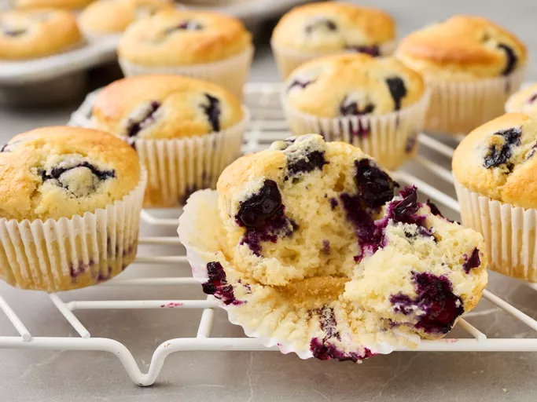

Muffin Recipe

Muffins are a type of bread that is baked in small portions. Many forms are somewhat sweet or spiced and are made with ingredients such as flour, sugar, milk, butter, and eggs. They are often eaten as a breakfast food.
Here is a recipe for muffins:
Prep time: 10 minutes
Cook time: 25 minutes
Total time: 35 minutes
Servings: 12
Yield: 1 dozen
Ingredients:
- 2 cups all-purpose flour
- 3/4 cup white sugar
- 1/2 teaspoon salt
- 3 teaspoons baking powder
- 1/4 cup vegetable oil
- 1 large egg
- 1 cup milk
Steps:
- Preheat oven to 400 degrees F (200 degrees C). Grease a 12-cup muffin tin or line with paper liners.
- Stir flour, baking powder, salt, and sugar together in a large bowl; make a well in the center.
- Beat egg with a fork in a small bowl or 2-cup measuring cup; whisk in milk and oil.
- Pour egg mixture all at once into flour mixture; mix quickly and lightly with a fork unti just moistened. The batter will be lumpy. (Fold in additional ingredients if using; see variations bellow).
- Spoon batter into the prepared muffin cups, filling each 3/4 full.
- Bake in the preheated oven until tops spring back when lightly pressed, about 25 minutes.
- Enjoy!
Back to homepage